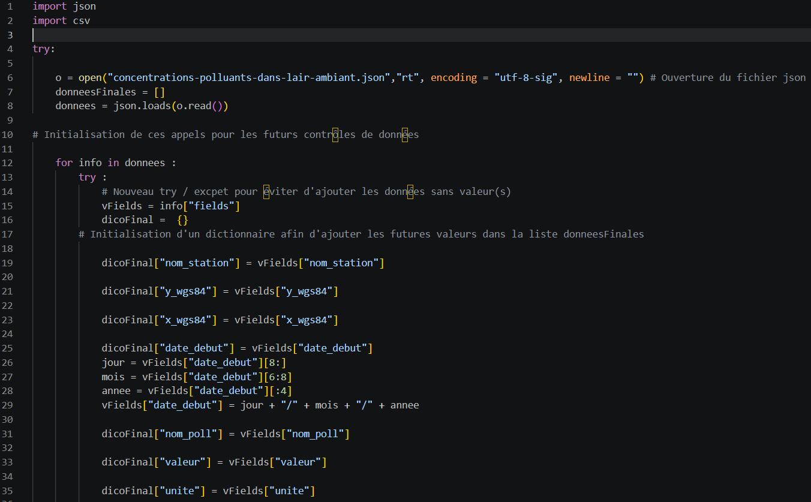
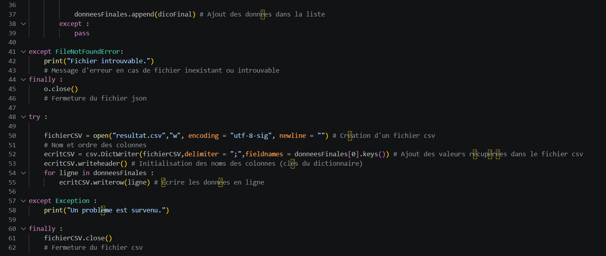

L'objectif de cette SAÉ était de créer un fichier csv recensant la concentration de polluants sur Poitiers, depuis un fichier json, grâce à un code Python qui permet également de trier les données.
Ce travail a permis de découvrir les imports json et csv sur Python, ainsi que la fonction try except. Il a également permis d'utiliser et de mieux comprendre les listes et les dictionnaires.
Le code est divisé en trois parties : l'importation du fichier json avec la fonction open, le tri des données et les contrôles afin d'éviter des erreurs (utilisation du try except en cas de problème d'ouverture du fichier), et l'export des données en créant le fichier csv.